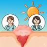

PET-Saúde UFPel – Painel Monitores
G10 · Telemonitoramento de Feridas Crônicas
📂 Abas da Planilha
📅 Registro (In) X, F, Xr, H › 📊 Presenças Relatórios › 🔄 Recuperação Reposições › 📋 Organização Semestre › 🚀 Abrir Planilha Completa para Editar